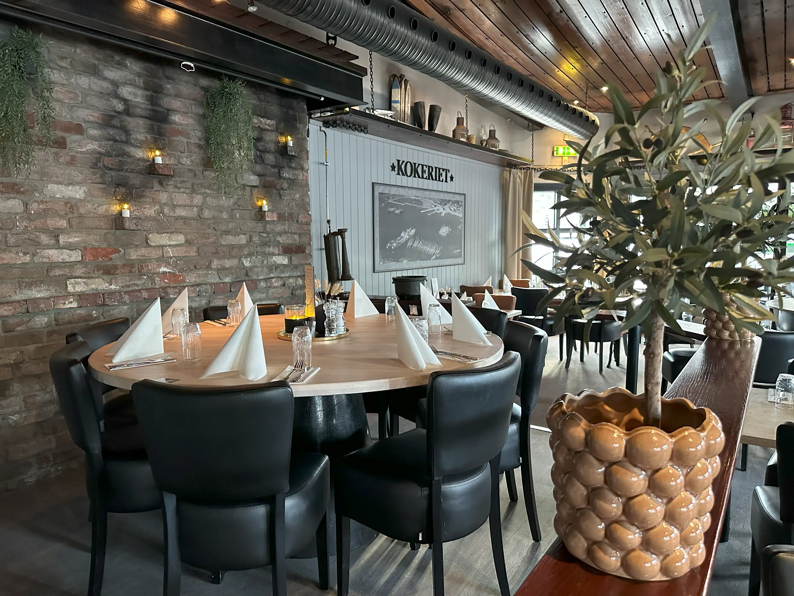

Sandefjord
Om oss
Kokeriet holder til i Sandefjord.
Kokeriet holder til i Sandefjord og tar oppdrag innen åpningstider, finn veien, julemat og arrangementer.
Serveres med ferskt hjemmelaget brød.
Hjem Bestill Bord Meny Julemat Arrangementer Gavekort Bryllup Selskap Galleri Kontakt Facebook Instagram Velg Side KOKERIET Se meny Bestill bord Meny Prøv vår fantastiske fiskesuppe! Fiskesuppen er en klassisk kremet suppe med karri, basilikum, blåskjell, grønnsaker og dagens fisk.
Vis menyer Åpningstider Mandag - lørdag fra 11.00 Søndag 12.00 (Stengetider kan avvike og reguleres etter antall besøkende) Om Kokeriet Kokeriet restaurant og bar er plassert i nydelige omgivelser på bryggekanten i Sandefjord.
«Henvendelsen som ikke blir liggende»

Vil du vite mer?
Vi svarer på det du lurer på, uten bindende avtale.
Ta kontakt